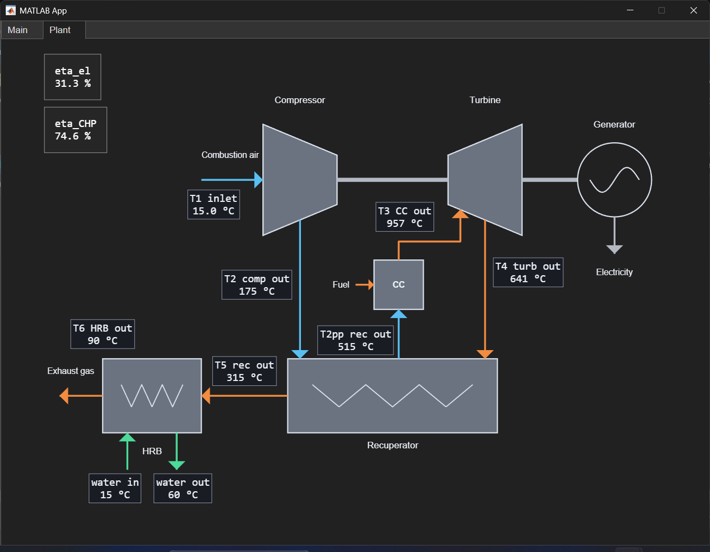

Control panel of a cogeneration microturbine
An interactive MATLAB application that simulates, in real time, the control panel of a gas microturbine of about 80 kW, integrated into a cogeneration (CHP) system that produces domestic hot water. Behind the interface runs a dynamic thermodynamic model built in Simulink.
Note. This model does not reproduce a specific real machine: it started as a simulation "game" for learning and practice. Its structure is, however, complete and physically consistent, so with accurate data from a manufacturer (maps, geometries, efficiency curves) it could be calibrated into a sort of digital twin of an existing microturbine.
Part 1
The app: what it does and how to control it
The app is organised into two tabs. The Main tab holds the controls and the real-time plots; the Plant tab shows the plant diagram with the physical quantities updated instant by instant. The user sets the boundary conditions and the requested power, starts the simulation and watches how the machine responds — just as they would in front of the control panel of a real plant.

The main controls
- Ambient temperature — the temperature of the intake air, which affects performance and efficiency.
- Initialize — computes the design point, builds the optimal-speed schedule and prepares the model before start-up.
- START / STOP — start and stop the dynamic simulation; the Status light shows the state (idle / running).
- Set load [kW] — the electrical power requested by the user: it is the "knob" used to drive the machine.
- Design — shows the design point and the reference thermodynamic cycle.
What you see during the simulation
On the right, three numeric indicators continuously report power, pressure ratio (PR) and shaft speed. The top plot compares the electrical power output with the requested set-point, while on the compressor map a point (OP) shows where the machine is operating relative to the surge line.


The Plant tab: the plant diagram
The second tab visualises the whole plant — compressor, combustion chamber, turbine, recuperator, generator and heat-recovery boiler (HRB) — with the temperatures at the various points and the two efficiencies (electrical and overall CHP) updated in real time. It is the most immediate way to "see" what happens inside the machine as the load changes.
Part 2
The model: blocks and equations
The heart of the app is a dynamic model of the single-shaft recuperated Brayton cycle. The flow follows the numbered stations below: inlet air (1), compressor discharge (2), recuperator cold-side outlet (2''), turbine inlet (3), turbine exhaust (4), recuperator hot-side outlet (5) and flue-gas outlet from the heat-recovery boiler (6). Below are the main blocks with their equations; for the "special" blocks I also indicate how they were implemented in Simulink.

Symbols: \(\gamma\) heat-capacity ratio of air, \(c_p\) specific heat, \(\eta\) efficiencies, \(\dot m\) mass flow rates, \(PR\) pressure ratio, \(\beta\) turbine expansion ratio.
Compressor
Map in SimulinkCompression is modelled as a real adiabatic transformation, starting from the isentropic one corrected with the efficiency \(\eta_c\):
\[ T_{2s} = T_1\, PR^{\frac{\gamma-1}{\gamma}}, \qquad T_2 = T_1 + \frac{T_{2s}-T_1}{\eta_c}, \qquad \dot W_c = \dot m_a\, c_{p,\text{air}}\,(T_2 - T_1) \]The air mass flow is not imposed: it is read from the compressor map, which links pressure ratio and speed to the processed flow, \(\dot m_a = f(PR, n)\).
CompressorMap.mat. The
\((\beta, n)\) points are interpolated with a Simscape lookup block (interpolation
over scattered data) to return the flow; the same map feeds the "live" plot and the
computation of the surge margin relative to the surge line.
Accumulation volume and pressure drops
A small plenum volume introduces the pressure dynamics: the discharge pressure evolves according to the mass balance between incoming and outgoing flow (\(\frac{dm}{dt} = \dot m_{in} - \dot m_{out}\), with \(P = mRT/V\)), making PR a state of the system rather than an imposed value. The pressure drops along ducts, recuperator and combustion chamber are lumped into coefficients that are quadratic in the flow:
\[ P_2' = PR\cdot P_1, \qquad P_3 = P_2'\,\bigl(1 - \lambda\, \dot m_a^{\,2}\bigr), \qquad P_4 = P_{amb} + \lambda_{eg}\, \dot m_{eg}^{\,2} \]Combustion chamber
The fuel flow is obtained from an algebraic energy balance, by imposing the turbine-inlet temperature \(T_3\) and accounting for the combustion efficiency \(\eta_{comb}\) and the lower heating value \(LHV\):
\[ \dot m_f = \dot m_a\,\frac{c_{p,eg}\,T_3 - c_{p,\text{air}}\,T_2''} {LHV\,\eta_{comb} - c_{p,eg}\,T_3} \]\(T_2''\) is the air temperature at the recuperator outlet (chamber inlet). Being a simple algebraic relation, it needs no dedicated Simulink structure.
Turbine
Choking in SimulinkThe turbine operates under sonic choking: the swallowed flow is linked to the inlet conditions by a machine constant \(K_{choke}\), fixed at the design point and treated as a hardware datum (the turbine "throat"):
\[ \dot m_{eg} = K_{choke}\,\frac{P_3}{\sqrt{T_3}}, \qquad K_{choke} = \left.\frac{\dot m_{eg}\sqrt{T_3}}{P_3}\right|_{\text{design}} \]The real expansion, with efficiency \(\eta_t\) and ratio \(\beta = P_3/P_4\), gives the exhaust temperature and the power:
\[ T_4 = T_3 - \eta_t\,T_3\Bigl(1 - \beta^{-\frac{\gamma-1}{\gamma}}\Bigr), \qquad \dot W_t = \dot m_{eg}\, c_{p,eg}\,(T_3 - T_4) \]Recuperator
5 nodes + metal massThe recuperator preheats the compressed air with the exhaust gas. It is the most elaborate block: it is modelled as a 5-node counterflow heat exchanger, each node with its own metal mass that stores energy and introduces thermal inertia. For every node the exchange effectiveness and the conductance depend on the flow according to the Dittus–Boelter correlation:
\[ \varepsilon = \exp\!\left(-\frac{UA/N}{\dot m\, c_p}\right), \qquad UA = UA_0\left(\frac{\dot m}{\dot m_0}\right)^{0.8} \]The metal temperature of each node evolves with the balance between heat released by the gas and absorbed by the air:
\[ C_m\,\frac{dT_{m,i}}{dt} = \dot Q_{h,i} - \dot Q_{c,i} \]recCold and recHot) that
share the 5 metal-temperature states; during transients they integrate the node
equations, at steady state they return the same result as the steady solver shared
with the design point.
Shaft dynamics
Compressor, turbine and generator sit on the same shaft. The imbalance between the power produced by the turbine and the power absorbed by compressor and electrical load accelerates or decelerates the rotor, with inertia \(J\):
\[ J\,\omega\,\frac{d\omega}{dt} = \eta_{mech}\,\dot W_t - \dot W_c - \frac{P_{el}}{\eta_{gen}} \]It is the state equation that governs speed: it is why, on a load step, the machine responds with a transient rather than instantaneously.
Generator and heat-recovery boiler (HRB)
The net shaft power becomes electrical power through the mechanical and electrical efficiencies; the gas leaving the recuperator finally releases heat to the water in the heat-recovery boiler, with effectiveness \(\varepsilon_{HRB}\), to supply domestic hot water:
\[ P_{el} = (\dot W_t - \dot W_c)\,\eta_{mech}\,\eta_{gen}, \qquad \dot m_w = \varepsilon_{HRB}\,\frac{\dot m_{eg}\,c_{p,eg}\,(T_5 - T_{w,in})}{c_{p,w}\,(T_{set} - T_{w,in})} \]A water buffer adds thermal inertia on the user side, stabilising the supply temperature around the set-point (60 °C).
Control system
Logic coreThe control tracks the requested power while keeping the machine safe and efficient. It is organised in three levels.
a) Optimal-speed schedule
For every power level the shaft speed that maximises the electrical efficiency is precomputed, subject to the constraints of surge margin, preserved choking, speed limits and maximum turbine-inlet temperature:
\[ n_{ref}(P_{el}) = \arg\max_{n}\ \eta_{el} \quad \text{s.t.}\quad \text{surge},\ \beta \ge \beta_{crit},\ n \in [n_{min}, n_{max}],\ T_3 \le T_{3,max} \]computeSpeedSchedule) and implemented at runtime
as a 1-D lookup \(P_{el}\rightarrow n_{ref}\), fast to evaluate at
every step.
b) Speed/power governor
A governor acts on the fuel flow to bring the speed to \(n_{ref}\); a rate limiter on the load request imposes ramps compatible with the thermo-mechanical dynamics, avoiding over/under-speed.
c) Protections and load shedding
When the shaft droops (\(n < n_{ref}\)) and the fuel is at its dynamic ceiling, a limiter proportionally reduces the applied load, just enough to let the machine recover:
\[ P_{shed} = K \cdot s \cdot \max\!\bigl(0,\ (n_{ref} - n) - \text{DZ}\bigr) \]Data sheet
Design specifications
Nominal parameters of the simulated machine (values to be filled in).
| Parameter | Value | Unit |
|---|---|---|
| Electrical performance | ||
| Rated electrical power | — | kW |
| Electrical efficiency | — | % |
| Minimum electrical power (turndown) | — | kW |
| Cogeneration (CHP) | ||
| Recovered thermal power | — | kW |
| Overall CHP efficiency | — | % |
| Hot-water supply temperature | — | °C |
| Thermodynamic cycle | ||
| Pressure ratio (PR) | — | – |
| Turbine-inlet temperature (T₃) | — | °C |
| Exhaust-gas temperature | — | °C |
| Air mass flow | — | kg/s |
| Recuperator effectiveness | — | – |
| Rotating group | ||
| Rated shaft speed | — | rpm |
| Speed range | — | rpm |
| Compressor efficiency | — | – |
| Turbine efficiency | — | – |
| Fuel | ||
| Fuel type | — | |
| Lower heating value (LHV) | — | MJ/kg |